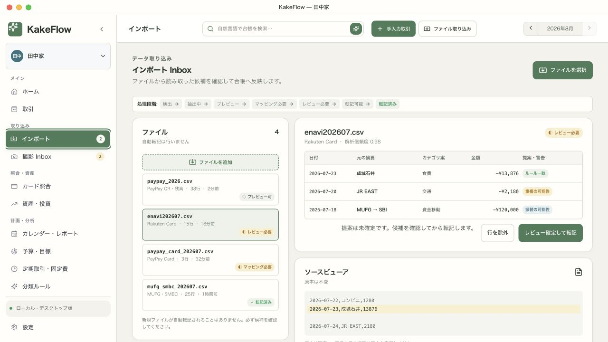

日本語レシートOCR
PP-OCRv5で日付、合計、税、品目を端末内で読み取ります。
v1.3.0 公開中 · AIトークン不要
LOCAL-FIRST · OPEN SOURCE · PRIVATE
レシートOCR、予算、取引、投資を一つに。データを外部AIへ送らず、数字の根拠まで追跡できるデスクトップ家計簿です。
macOS ARM64 対応。現在のバイナリはアドホック署名済み・未公証です。

PP-OCRv5で日付、合計、税、品目を端末内で読み取ります。
月次予算、貯蓄目標、超過と変化を一画面で確認。
保有、評価損益、配当、資産配分を家計と分けて管理。
END-TO-END DEMO USE CASE
共働き・子ども2人の田中家が、買い物後の記帳から月次予算、長期資産までを外部AIへ送信せずに確認するシナリオです。
今月の収支、予算、未確認項目から今日の優先事項を把握。
端末内OCRで日付、合計、税、品目を抽出し、原本と照合。
候補を承認後だけ台帳へ記帳し、超過と貯蓄目標を再評価。
日常の家計と投資評価額・損益・配分を同じ流れで確認。
結果一つの確認済みローカル台帳から、日々の支出、月次計画、長期資産を説明できます。
REAL PRODUCT, REAL DATA FLOW
実際のKakeFlow画面です。タブを切り替えて、OCR取込、予算管理、投資ポートフォリオを確認できます。

BUILT FOR DAILY FINANCE
取込、分類、予算、定期支出、カード照合、投資、監査ログを一つのローカル台帳につなぎます。
画像とスキャンPDFを読み取り、重複候補、日付、金額、税、品目をレビュー。
予算閾値、貯蓄目標、定期支出の変化を、説明可能なローカル判定で通知。
スナップショット、FIFO実現損益、配当、資産配分、評価推移を追跡。
取引、元ファイル、元行、レシート、監査ログをリンクして確認できます。
PRIVATE BY DEFAULT
OCRとカテゴリ提案は端末内で実行。KakeFlowは支払いを開始せず、確認前の候補を確定取引として扱いません。
OPEN SOURCE · LOCAL-FIRST · REVIEWABLE
SUPPORT
INTERNATIONAL
VIETNAM